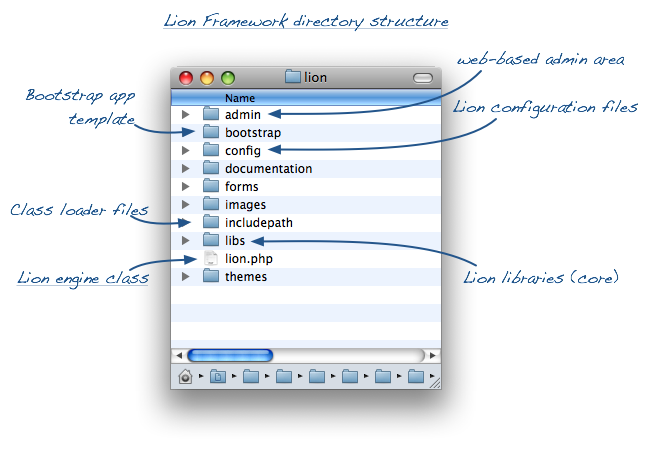
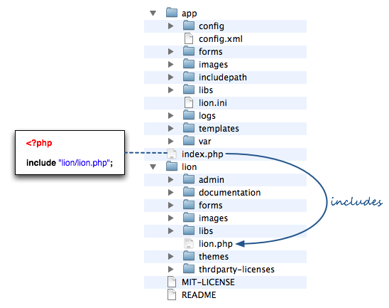

<table cellpadding="10" cellspacing="0" width="100%" border="0"><tr><td valign="top">
<div><a name=""></a><h1>Lion Structure and Classes</h1>
  <div class="ref-purpose">Going inside the Framework</div>
 <div class="ref-synopsis"></div>
<h2>Table of Contents</h2>
<ul>

<a href="../Lion/tutorial_Lion.StructureAndClasses.pkg.html#lion_structure">Lion directory structure</a><br />

<a href="../Lion/tutorial_Lion.StructureAndClasses.pkg.html#lion_classes">Lion Classes</a><br />
</ul>

 <p></p>
 <span><a name="lion_structure"></a><h2>Lion directory structure</h2><p>The <i>lion</i> directory contained within the lion distribution is like the following one:</p>
  <p></p>
  <p>The <strong>/admin</strong> directory contains the Lion administration area (web-based application embedded within the rest of lion distribution)</p>
  <p>The <strong>/config</strong> directory contains all the default configuration values as well as the <strong>lion.ini</strong> configuration file.<br />
  It's important to note that lion.ini contains all the runtime directives used by lion.</p>
  <p>The <strong>/includepath</strong> directory contains all the class loader files³</p>
  <p>The <strong>/libs</strong> directory is the one that contains the lion core as well as all the libraries, modules and classes used by the framework.</p>
  <p>Finally, the file <strong>lion.php</strong> located in the root directory contains the lion engine: a class in charge of load and execute the rest of the framework.</p>
  <p>This file is the only one that we may include in our applications.</p>
  <p></p>
  <p>As soon as lion has his own class loader, we don't need to worry about including more files than the lion.php file. This task will be performed on demand by the framework, for both the framework classes as well as our own classes containing within our application directory.</p>
  <center><div class="messagebox note metadata plainlinks"><table style="width:100%; background:none"><tr><td width="60"></td><td>Read more about the class loader at <a href="../Lion/tutorial_Lion.ClassLoader.pkg.html">The Class Loader</a> section.</td></tr></table></div></center></span>
 <span><a name="lion_classes"></a><h2>Lion Classes</h2><p>All the lion classes start with a double underscore, (i.e. __Lion, <a href="../FrontController/__FrontController.html">__FrontController</a>, <a href="../Security/__AuthenticationManager.html">__AuthenticationManager</a>, ...).</p>
  <p>By ussing this naming convention, lion tries to do not interfere with other application classes nor third party libraries and modules, as soon as it's really unusual to use this preffix.</p>
  <p>At the same time, the double underscore allow classes to be more readable (vs. ussing a 2 letters suffix or similar ways)</p></span></div>
      </td></tr></table>